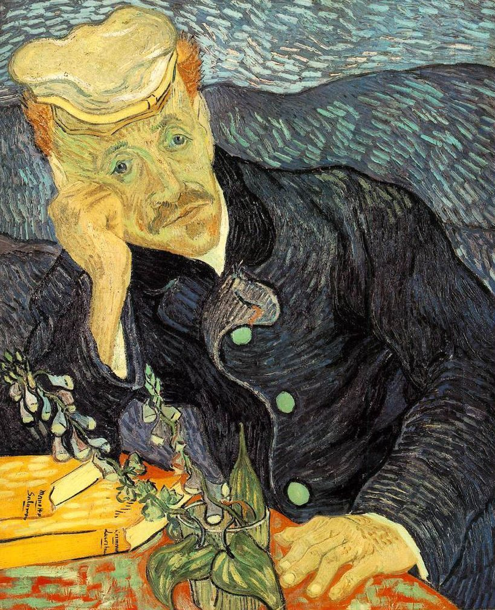
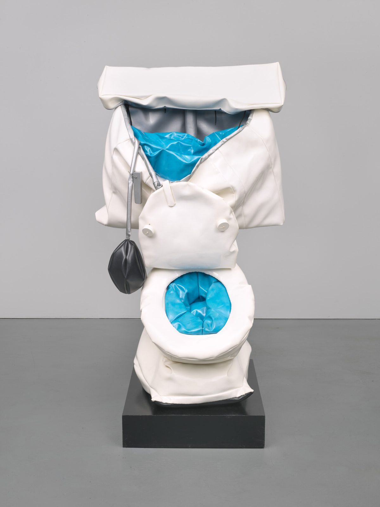
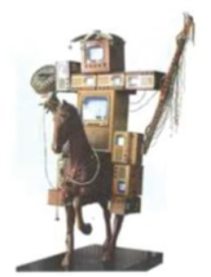

공지
- 8학년 감상수업 홈페이지를 열었습니다.
- 수행평가 기준과 반별 평가 날짜를 확인하세요.
- 연습용 원고지를 「수행평가지」 메뉴에 올렸습니다.
- 결석한 학생은 「일정·결석생」에서 보충 방법을 확인하세요.
이번 주,
수업 1에서 할 일
- 강의 영상으로 4단계 익히기
- 조형 요소와 원리 다시 보기
- 고흐 「의사 가셰의 초상」 모범답안 읽기
- 올덴버그 「부드러운 변기」로 직접 써 보기오픈북 · 인터넷 검색 가능
평가 날에는
도판만 보고 혼자 씁니다
- 4개 작품 중 하나를 제비뽑기로 정합니다.
- 뽑은 작품의 도판을 보며 4단계로 씁니다.
- 필기도구는 자유, 빨간색만 안 됩니다.
- 휴대폰·유인물은 가방에 넣습니다.
각 반 평가 날짜
| 8-1 | 수요일 | 11월 25일 |
| 8-2 | 목요일 | 11월 26일 |
| 8-3 | 화요일 | 12월 1일 |
| 8-4 | 월요일 | 11월 23일 |
| 8-5 | 목요일 | 11월 26일 |

모범답안 고흐, 「의사 가셰의 초상」, 1890
?
출제 작품 4점은 아직 미정입니다
평가 전에 「학습내용」에서 공개합니다

